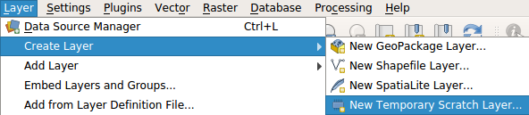
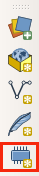

From the QGIS menu select "Layer → Create Layer → New Temporary Scratch Layer..."
Alternatively, you can click on the "New temporary scratch layer" button at the "Data Source Manager" toolbar. Button highlighted in red at the screenshoot below.
